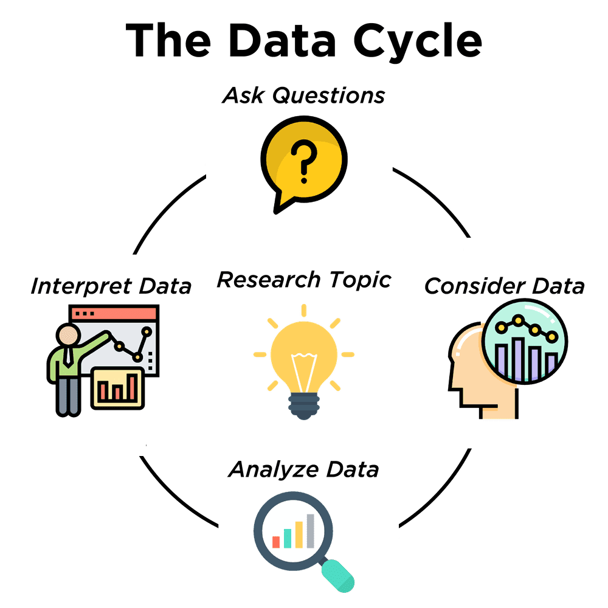

The Data Cycle
(Also available in Pyret)
Students are introduced to the Data Cycle, a four-step scaffold for getting an answer from a dataset - and then generating the next question! Students learn to identify - and ask - statistical questions, by comparing and contrasting them with other kinds of questions.
|
Lesson Goals |
Students will be able to…
|
|
Student-facing Lesson Goals |
|
|
Materials |
|
|
Preparation |
|
| Telling Your Data Story | 10 minutes |
Overview
Students learn about the Data Cycle, which is a scaffold to support asking them in questions, thinking about how those questions relate to the data in front of them, analyzing that data, and interpreting the results.
Launch
-
Open your saved Animals Starter File, or make a new copy.
-
Working in pairs, turn to The Animals Dataset in your student workbooks, or open the Animals Spreadsheet.
-
You and your partner are going to answer a simple question: are more animals fixed or unfixed?
Data Science is all about asking questions of data. Sometimes the answer is easy to compute. Sometimes the answer to a question is already in the dataset - no computation needed. And sometimes the answer just sparks more questions!
Data Scientists ask a ton of questions, and each question adds a chapter to their data story. Even if a question turns out to be a dead-end, it’s valuable to share what the question was and what work you did to answer it!

{kind=link}
1) We Ask Questions - which can be answered with data.
2) We Consider Data. This could be done by conducting a survey, observing and recording data, or finding a dataset.
3) We Analyze the Data, to produce data displays and new tables of filtered or transformed data, to identify patterns and relationships.
4) We Interpret the Data, answering questions and summarizing results. As we’ve already seen from the Animals Dataset, these interpretations often lead to new questions….and the cycle begins again.
Investigate
This was a pretty specific question, and it was straightforward to answer it. But the answers to even simple questions can lead to more interesting questions down the road!
-
What other questions might come from counting the ratio of fixed to unfixed animals?
-
Sample responses: Is there a higher percentage of fixed dogs or fixed cats? At what age do animals get fixed? Do fixed animals get adopted more quickly than unfixed animals?
-
Synthesize
This is a short example of a Data Story - a description of how each step in the Data Cycle was used to go from a question to an answer, and then to the next question. When analyzing a real dataset, Data Scientists might explore lots of questions, resulting in many different Data Stories to tell.
Each chapter in the Data Story is valuable, and the Data Cycle represents each chapter you plan to add.
| Ask Questions | 15 minutes |
Overview
Students begin to categorize questions, sorting them into "lookup", "arithmetic", and "statistical" questions - as well as questions that simply can’t be answered based on the data.
Launch
 🖼Show image How do we know what questions to ask? There’s an art to asking the right questions, and good Data Scientists think hard about what kind of questions can and can’t be answered.
🖼Show image How do we know what questions to ask? There’s an art to asking the right questions, and good Data Scientists think hard about what kind of questions can and can’t be answered.
{kind=link}
Most questions can be broken down into one of four categories:
-
Lookup questions can be answered simply by looking up a single value in the table and reading it out. Once you find the value, you’re done! Examples of lookup questions might be “How many legs does Felix have?” or "What species is Sheba?"
-
Arithmetic questions can be answered by computing an answer across a single column. Examples of arithemetic questions might be “How much does the heaviest animal weigh?” or “What is the average age of animals from the shelter?”
-
Statistical questions are where things get interesting. If we asked, "How old are animals at the shelter?", there are lots of ways to answer! We could report back the average age, the age that shows up most frequently or the range of the ages. Other examples of statistical questions might include "How long does it take for an animal to get adopted?" or "What’s a typical age for the cats?". There are also some statistical questions that deal with relationships between two columns: “Do cats tend to be adopted faster than dogs?” or “Are older animals heavier than young ones?”
-
Questions we can’t answer would need data that we don’t have. We might wonder where the animal shelter is located, or what time of year the data was gathered! But the data in the table won’t help us answer that question, so as Data Scientists we might need to do some research beyond the data. And if nothing turns up, we simply recognize that there are limits to what we can analyze.
-
What kind of question is "Are more animals fixed or unfixed?"?
-
It’s an arithmetic question.
-
-
What kind of question is "How old is Toggle?"
-
It’s a lookup question.
-
Investigate
-
Turn to Which Question Type?, and fill out the "Type" column in the table at the bottom. For now, ignore the other columns.
-
Look at the Wonders you wrote on Questions and Column Descriptions. Are these Lookup, Arithmetic, or Statistical questions?
-
Optional: For more practice, complete Question Types: Animals, by coming up with examples of each type of question for the Animals Dataset.
Common Misconceptions
-
Students generally struggle to make the leap into asking statistical questions. It’s worth taking time on this, to support them coming up with better (and more engaging!) questions later.
-
They may think that "What’s the average weight of the animals?" is a statistical question, because "average" is a term that shows up in statistics. But computing the average is just pure arithmetic! A statistical question would be "What’s the typical weight of an animal?", because it does not specify a particular arithmetic process. The answer could be the mean, the median, or even the mode! Figuring out which one to use depends on the distribution of the data, which we’ll discuss more in a later lesson.
Synthesize
-
How would you explain the difference between Lookup, Arithmetic, and Statistical questions?
-
When you looked back at your Wonders from the Animals Dataset, were they mostly Lookup questions? Arithmetic? Statistical?
-
What are some examples of statistical questions the owner of a sports team might ask? Or a researcher who is trying to see if a cancer drug is effective? Or a principal who wants to know what will help their students the most?
| Consider Data | 20 minutes |
Overview
Students bridge from a human-language question into something more formal, by specifying the rows and columns they would need to examine. This activity stresses a hard programming skill (reading Contracts) with formal reading comprehension (identifying key portions of a statistical instruction).
Launch
Once we have our question, it’s time to figure out what data we’ll need to answer it!
When considering data, we ask: Which Rows do we need? Which Column(s) do we care about?
 🖼Show image Tables are made of Rows and Columns. Each Row represents one member of our population. In the Animals Dataset, each row represents a single animal. In a dataset of temperature readings, each row might represent the temperature at a particular hour.
🖼Show image Tables are made of Rows and Columns. Each Row represents one member of our population. In the Animals Dataset, each row represents a single animal. In a dataset of temperature readings, each row might represent the temperature at a particular hour.
{kind=link}
Columns, on the other hand, represent information about each row. Every animal, for example, has columns for their name, species, sex, age, weight, legs, whether they are fixed or unfixed, and how long it took to be adopted.
If we want to know which cat is the heaviest, we only care about rows for cats, and we only need the pounds column. If we want to know how many fixed animals are rabbits, we only care about rows for fixed animals, and we only need the species column.
-
If our question is "How old is Mittens?", what rows and column(s) do we need?
-
We only need one row for Mittens, and we just need the
agecolumn
-
-
If our question is "Which animal is the heaviest?", what rows and column(s) do we need?
-
We need to compare every row, and we only look at the
poundscolumn
-
-
What rows and columns did we need to answer "Are more animals fixed or unfixed?"?
-
We needed to look at all the rows, but the only column we care about is
fixed.
-
Investigate
-
Return to Which Question Type? For each question, which rows would you need to answer them? (Sometimes we need all rows, and sometimes we only need a subset.) Which columns would you look at? Write your answers in the last two columns of the table at the bottom.
-
Complete Data Cycle: Consider Data.
Common Misconceptions
Students often forget that questions like "Who is the oldest?" or "What is the most?" require looking at every row in the table.
Synthesize
Have students share their answers and discuss any questions they have about these pages.
How does asking "Which rows? Which columns?" help us figure out which configurations to use?
| Analyzing Data | 15 minutes |
Overview
Students progress to the third step in the Data Cycle, by combining the "Consider Data" stepwith their knowledge of Contracts to help them Analyze that data.
Launch
 🖼Show image Once we know what data we need, we can turn our attention to what we want to build with it!
🖼Show image Once we know what data we need, we can turn our attention to what we want to build with it!
{kind=link}
-
Do we need all the rows, or just some of them?
-
Do we need a bar chart? A scatter plot?
What kinds of displays can help us analyze whether there are more fixed or unfixed animals? A bar chart will allow us to see the actual count ("20 fixed vs. 10 fixed") of animals in each category.
Once we’ve decided what to make and we know which rows and columns we’re plotting, the next step is to choose the appropriate configuration.
Investigate
Let’s get some practice going from questions to code, and making data displays in the process!
Turn to Data Cycle: Analyzing with Displays, and see if you can fill in the first 3 steps of the Data Cycle for a set of predefined questions. When you’re finished, try to make the display in CODAP.
Have students share their results. What did their charts tell them?
Synthesize
 🖼Show image In this case, we got a clear answer to our question. But perhaps that’s not the end of the story! We might be curious about whether a higher percentage of dogs are spayed and neutered than cats, or whether it’s even possible to "fix" a tarantula. All of this belongs in our data story!
🖼Show image In this case, we got a clear answer to our question. But perhaps that’s not the end of the story! We might be curious about whether a higher percentage of dogs are spayed and neutered than cats, or whether it’s even possible to "fix" a tarantula. All of this belongs in our data story!
{kind=link}
[*] From the Mobilizing IDS project and GAISE
These materials were developed partly through support of the National Science Foundation,
(awards 1042210, 1535276, 1648684, and 1738598).  Bootstrap by the Bootstrap Community is licensed under a Creative Commons 4.0 Unported License. This license does not grant permission to run training or professional development. Offering training or professional development with materials substantially derived from Bootstrap must be approved in writing by a Bootstrap Director. Permissions beyond the scope of this license, such as to run training, may be available by contacting contact@BootstrapWorld.org.
Bootstrap by the Bootstrap Community is licensed under a Creative Commons 4.0 Unported License. This license does not grant permission to run training or professional development. Offering training or professional development with materials substantially derived from Bootstrap must be approved in writing by a Bootstrap Director. Permissions beyond the scope of this license, such as to run training, may be available by contacting contact@BootstrapWorld.org.